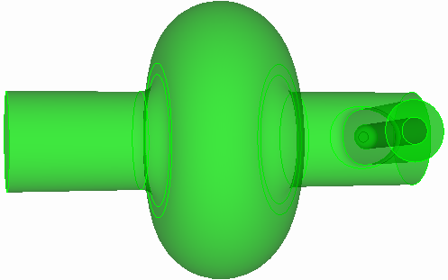
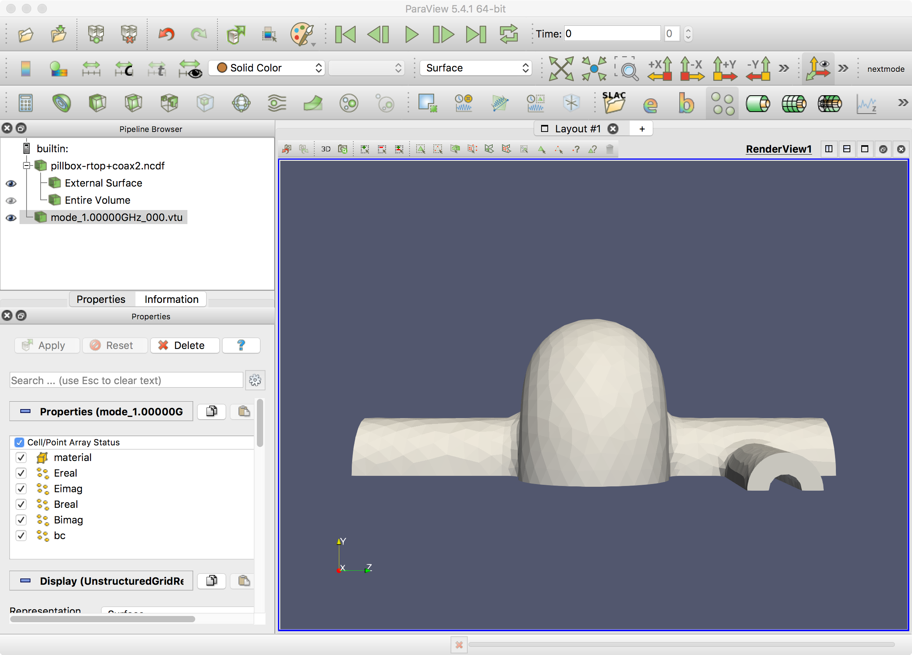
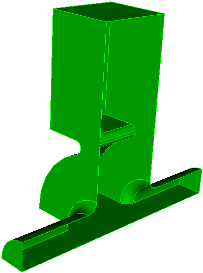
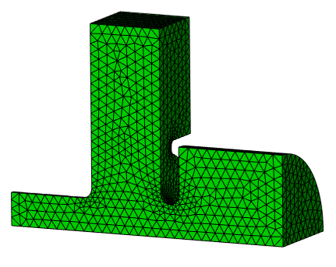
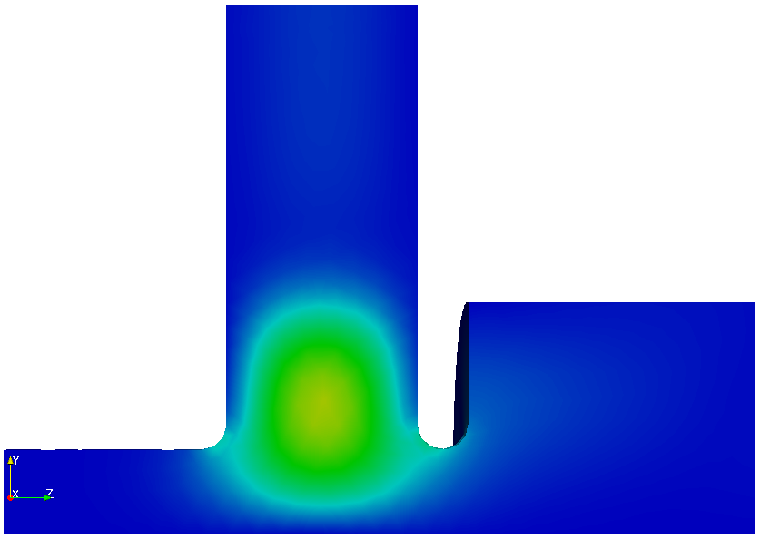
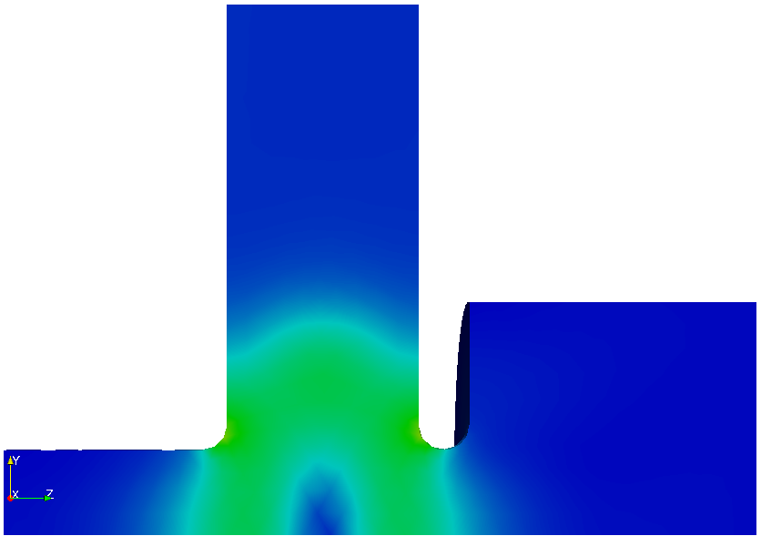
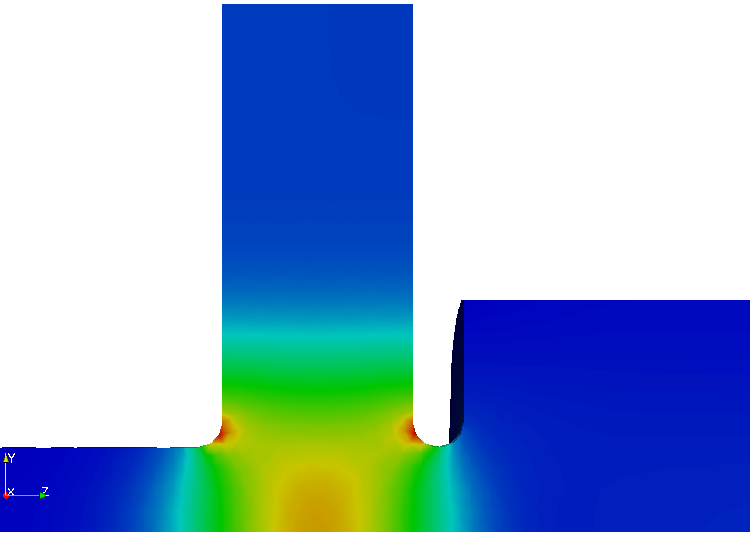

Tutorial 2: couplers and waveguide ports¶
Real cavities have couplers. A coupler turns the lossless eigenproblem into a complex one: energy leaves through the port, the eigenfrequency acquires an imaginary part, and the external Q follows. This tutorial adds a coax coupler and then a waveguide coupler to the pillbox from Tutorial 1, and ends with a two-port case that requires the nonlinear eigensolver.
Part A: coax coupler¶
Example directory: examples/omega3p/pillbox-rtop+coax

| Coax dimension | Value |
|---|---|
| Inner conductor radius | 8.7 mm |
| Outer conductor radius | 20 mm |
| Axial position | z = 100 mm |
| Inner conductor tip | 30 mm from beam axis |
| Tip rounding | 5 mm |
| Outer-to-beampipe rounding | 7 mm |
Build in steps¶
Complex models are easiest to build incrementally. Reuse the full pillbox saved in Tutorial 1, add the coax, then cut to a half model. Only one symmetry plane survives because the coupler breaks the other.
reset
create Cylinder height 120 radius 20
create Cylinder height 120 radius 8.7
body 1 2 rotate 90 about y
body 1 2 move -60 0 100
body 2 move -30 0 0
import acis "pillbox-rtop0.sat"
unite body 1 3
compress ids
subtract body 2 from 1
compress ids
modify curve 10 blend radius 7
modify curve 12 blend radius 5
export acis "pillbox-rtop+coax.sat" overwrite
webcut volume 1 with plane yplane offset 0
delete body 1
compress ids
export acis "pillbox-rtop+coax2.sat" overwrite
Mesh with a port sideset¶
reset
import acis "pillbox-rtop+coax2.sat"
volume all scheme Tetmesh
volume all sizing function type skeleton scale 7 time_accuracy_level 2 min_size auto max_size 15 max_gradient 1.5
mesh volume all
Sideset 2 surface 1 # symmetry plane
Sideset 3 surface 3 # beam pipe end
Sideset 4 surface 2 # beam pipe end
Sideset 7 surface 17 # coax port
Sideset 6 surface all except 1 3 2 17
block 1 volume all
block 1 element type tetra10
volume all scale 0.001
export Genesis "pillbox-rtop+coax2.gen" block all overwrite
The coax end surface gets its own sideset, 7, so it can be declared a port. The beam pipe ends are 3 and 4.
Input with a port¶
ModelInfo : {
File: ./pillbox-rtop+coax2.ncdf
BoundaryCondition : {
Magnetic: 2
Electric: 3, 4 // beam pipe ends, below cutoff
Exterior: 6
Waveguide: 7 // coax port
}
SurfaceMaterial : {
ReferenceNumber: 6
Sigma: 5.8e7
}
}
FiniteElement: {
Order: 2
CurvedSurfaces: on
Tolerance: 1e-7
}
EigenSolver : {
NumEigenvalues: 1
FrequencyShift: 1.0e9
}
Port : {
ReferenceNumber : 7
NumberOfModes : 1 // the coax TEM mode
}
PostProcess : {
Toggle: on
ModeFile: mode
}
The beam pipe ends are closed with Electric. That is fine here because the pipe is below cutoff at 1.3 GHz, so the field there has decayed to nothing. The coax port is Waveguide with one mode loaded: a coax has a TEM mode with zero cutoff, and nothing else propagates at this frequency.
Run and read¶
Convert, run, and post-process exactly as in Tutorial 1. The mode summary now has a complex frequency and an external Q. From the example's stored results:
Mode : {
TotalEnergy : 4.4270939088102e-12 , 0
ExternalQ : 1024235.9558753
QualityFactor : 28815.235456204
File : omega3p_results/omega3p.l0.m0000.R1.3137561e+09.I6.4133469e+02.mod
PowerLoss : 1.2682100135575e-06
Frequency : 1313756106.8639 , 641.33469408486
}
ExternalQ is the coupler Qext, here about 1.0 million: with the inner conductor tip 30 mm from the axis, this coax barely couples to TM010. QualityFactor is still the wall Q0, essentially unchanged from the closed cavity. The loaded Q is \(1/Q_L = 1/Q_0 + 1/Q_{ext}\), and the imaginary part of the frequency is \(f_r / 2 Q_L\). Pushing the probe deeper toward the axis lowers Qext rapidly; the hands-on exercise in Part B does the equivalent for a waveguide iris.
Port modes in ParaView¶
Omega3P writes the 2D port mode it computed on the port surface to omega3p_results/port7/mode_1.00000GHz_000.vtu. Load the 3D mesh with the SLAC toolbar, then File, Open the .vtu file and color by Ereal. Switch to wireframe if the port surface hides behind the wall.

Part B: rectangular waveguide coupler¶
Example directory: examples/omega3p/pillbox+recWG

A waveguide coupler attaches a rectangular guide to the cavity through an iris. The journal step2-ADD-recWG-to-pillbox.jou parameterizes the guide width wguide, height hguide, iris width wiris, and iris depth diris, builds the guide as two bricks, unites with the full pillbox, rounds the iris corners, and cuts to a quarter model. The waveguide end becomes sideset 7.
The input is the same shape as the coax case:
BoundaryCondition : {
Magnetic: 1, 2
Electric: 3, 4
Exterior: 6
Waveguide: 7
}
Port : {
ReferenceNumber : 7
NumberOfModes : 1 // TE10 of the rectangular guide
}
A rectangular guide, unlike a coax, has a nonzero cutoff. Omega3P computes the guide's modes on the port surface numerically and writes them to 2dports.log. Check that the TE10 cutoff is below the cavity frequency, otherwise the port is not actually propagating.
Absorbing boundary alternative¶
If modal accuracy at the port does not matter, a first-order absorbing boundary is simpler:
BoundaryCondition : {
...
Absorbing: 7
}
Port : {
ReferenceNumber : 7
CutoffFrequency : 1e9 // phase velocity from this cutoff
}
Without a Port block, the absorbing boundary assumes a phase velocity of \(c\). With CutoffFrequency, it uses the guide's phase velocity at the eigenfrequency. The absorbing boundary is less accurate than a waveguide port with modal expansion and should be reserved for beam-pipe truncation.
Hands-on¶
Change wiris in the journal, remesh, rerun, and find the iris width that gives Qext of about 4000. Two or three iterations usually bracket it.
Part C: two ports with different cutoffs¶
Example directory: examples/omega3p/pillbox+recWG+cirWG

Add a circular waveguide on the beam axis to the Part B model. Now there are two ports, each with several modes near the cavity frequency and with different cutoffs. The waveguide boundary term depends on frequency through \(\sqrt{\omega^2 - \omega_c^2}\) for each loaded mode, and with more than one distinct cutoff the eigenproblem is no longer quadratic. Omega3P solves it with CORK, a rational Krylov method.
EigenSolver : {
NumEigenvalues: 3
Tolerance: 1e-10
FrequencyShift: 1.0e9
SolverMode: CORK
CORK : {
TargetFrequencyMin: 1.0e9 // search window, real part
TargetFrequencyMax: 2.4e9
TargetFrequencyImag: 5.0e8 // search window, imaginary part
MaxIterations: 500
ApproxTolerance: 1e-12 // rational approximation accuracy
ApproxMaxDegree: 100
}
}
Port : {
ReferenceNumber : 4 // circular guide
NumberOfModes : 10
}
Port : {
ReferenceNumber : 7 // rectangular guide
NumberOfModes : 10
}
CORK searches a rectangle in the complex frequency plane rather than expanding around a single shift, so you give it a window instead of a target. Start by loading generously many port modes, here 10 per port, so no propagating mode is missed.
Check the port modes¶
After the run, 2dports.log lists each port's modes with cutoff frequency and type. For this geometry:
| Mode | Port 4 (circular) | Port 7 (rectangular) |
|---|---|---|
| 1 | TM 1.043 GHz | TE 0.908 GHz |
| 2 | TE 1.325 GHz | TE 1.897 GHz |
| 3 | TM 2.228 GHz | TM 1.897 GHz |
| 4 | TE 2.307 GHz | TE 2.726 GHz |
| 5 | TM 2.395 GHz | TE 3.194 GHz |
The first run found three eigenmodes at 1.176, 2.062, and 2.197 GHz. Compare these against the cutoffs. Port 4 has TM modes with cutoffs at 2.228 and 2.395 GHz, very close to eigenmodes 2 and 3. A loaded mode whose cutoff sits almost on top of an eigenfrequency has \(\sqrt{\omega^2-\omega_c^2}\) near zero, which makes the rational approximation poorly conditioned and contaminates the solution.
Rerun with only the propagating modes¶
Load exactly the modes that propagate at the eigenfrequencies of interest:
Port : {
ReferenceNumber : 4
NumberOfModes : 2
}
Port : {
ReferenceNumber : 7
NumberOfModes : 3
}
| Mode | in1 f (GHz) | in1 Qext | in2 f (GHz) | in2 Qext |
|---|---|---|---|---|
| 1 | 1.176 | 267 | 1.176 | 271 |
| 2 | 2.062 | 496 | 2.057 | 273 |
| 3 | 2.197 | 749 | 2.196 | 693 |
Mode 1 is unaffected since no cutoff is near it. Modes 2 and 3 change noticeably, and the second run is the trustworthy one. The lesson generalizes: load all propagating port modes and no evanescent mode whose cutoff is close to an eigenfrequency. Run once with many modes to learn the cutoffs, then run again with the right count.



Complex electric fields of the three modes from the second run.